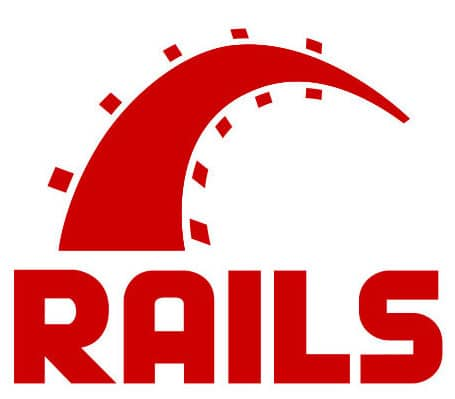

More than ever, the cheapest way to build a framework is to refactor it out of a specific app.
Rails is a web development server side framework built in Ruby. It’s been and remains very popular. It set the tone for all the MVC web frameworks that followed. People have ported it to many other languages. Rails is now in it’s 5th version, what is less known is how it was built in the first place.
The story of Rails
David Heinemeier Hansson, the creator of Rails, is a cult in the Ruby community. You can find the history of Rails at many places. If you have a bit of time, read this great article from Wired. If you don’t have a lot of time, here is a summary.
Jason Fried and DHH were working at 37signals. They were working on project management app for small businesses called Basecamp. After releasing the first version of Basecamp, DHH extracted and open sourced Rails out of it.
37signals later then re-used Rails to build other apps like Campfire, Highrise and Backpack.
We all know the end of the story, Rails adoption exploded. Many successful companies like Github, Airbnb, Twitter & Shopify have used it. It evolved a lot, through the darwinism of open source. Today, Rails might not be the latest and coolest web framework, but it is still very productive and popular.

Economic sense
To summarize, here is how they did it :
- Built a specific app, and monetized it
- Extracted an open source framework from it
- Built other apps on the framework
If you are not a programmers, you’re likely to assume that the cost of reusing software is negligible. If you are a programmer, I’ll ask you to assume that it is for a while. Under this hypothesis, all they did makes a lot of business sense :
- Building a specific app first is the fastest path to paying customers. Building a framework first would need more work.
- Once you have paying customers, you’ve got money to fuel further work.
- In particular, you have money to finance the extraction of an open source framework.
- Putting the framework open source increases its reusability through bug reports and contributions.
- Building the next app is even easier thanks to a mature framework and the revenues from the original app
💡 Once you have paying customers, you’ve got money to fuel further work.
How can it work ?
Ok, enough for common sense. Let’s see what happens when you take into account the real cost of changing software ? All software developers know that changing software is far from cheap. Very often, it’s more expensive to adapt than to rebuild
So how did the Rails guys manage it ? Rails has 3 specificities that explain that :
- Rails has automated testing built in and out
- Basecamp guys are agile with a lower ‘a’. They don’t follow Scrum or any method. Read their books and you’ll understand how agile they are. They follow principles like KISS, YAGNI, Lean startup discovery …
- Finally, it was open sourced !
Agile principles and technical practices is what allowed them to take the common-sense path.
💡 Thanks to agile practices, the cheapest way to build a framework is to extract it from a specific app.
Open question
If it is possible to do the thing that makes the most economic sense, why isn’t it the default way ? Why are so many of us still losing a ton of money writing large frameworks and platforms up-front ? How could we get large companies to adopt the more nimble ‘basecamp’ way ?
If you have remarks, answers or different point of views, I’d love to read your comment !